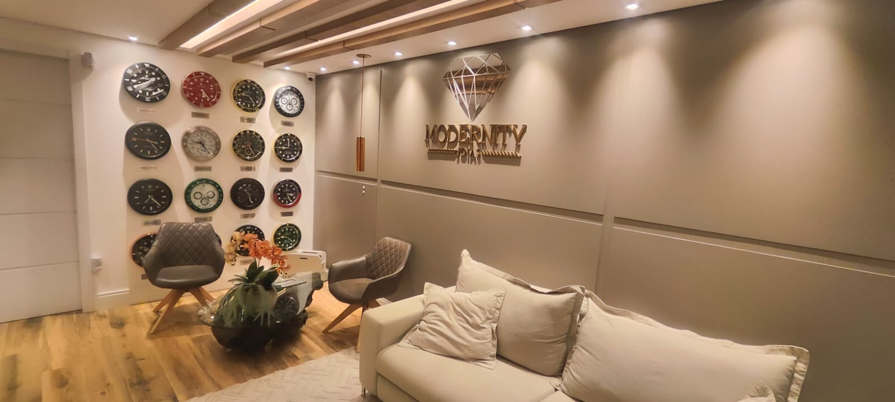

01
Curadoria
Seleção criteriosa de joias e relógios com presença, acabamento e narrativa própria.

Joalheria & Relojoaria
Peças que atravessam momentos. Um ateliê onde precisão, brilho e presença se encontram.
A marca
Cada peça é escolhida e apresentada como um gesto — para marcar um rito, um presente ou a própria presença.
Seleção criteriosa de joias e relógios com presença, acabamento e narrativa própria.
Atendimento reservado, consulta personalizada e ambiente de ateliê para decidir com calma.
Peças pensadas para durar além da tendência — brilho que acompanha biografias.

O espaço
Luz quente, linhas limpas e uma parede de mostradores que convida à contemplação. Aqui, escolher um relógio ou uma joia é um ritual — não uma corrida.
Seleção
Três caminhos de desejo — do gesto diário à peça de presença absoluta.
Acervo
Cada peça é única. Toque para ver todos os ângulos, o giro em vídeo e a ficha completa.